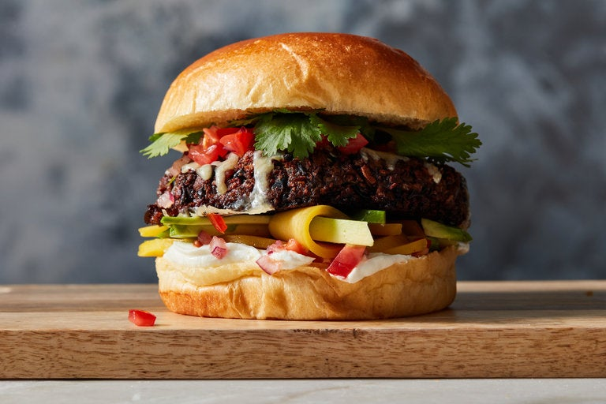

Jamie Oliver’s Vegetarian Black Bean Burgers

“These veggie burgers are packed with protein, a nutrient that is often lacking from a vegetarian diet.
But of course, you don’t have to be a vegetarian to enjoy these!
Oozy mozzarella, punchy balsamic onions and a tangy, crunchy slaw make this dish a weeknight staple,
and you can whip it up in under an hour.”
Ingredients
Yield: 4 servings
- 1½ red onions
- ½ pound mixed fresh mushrooms
- 3½ ounces rye bread, torn into ½-inch pieces (about 2½ cups)
- 1 (15-ounce) can black beans, drained and roughly mashed with a fork
- 1 teaspoon ground coriander, plus more for dusting
- Kosher salt and black pepper
- Olive oil, as needed
- 2 ounces sharp Cheddar, grated (about 1 cup)
- 4 large brioche rolls, potato rolls or burger buns
- 4 ounces cherry tomatoes, chopped (about 1 cup)
- 1 lime
- Chipotle hot sauce, as needed
- 1 ripe mango
- 1 ripe avocado
- ¼ cup plain yogurt
- 4 fresh cilantro sprigs
Steps
- Heat the oven to 400 degrees. Peel and roughly chop 1 onion, then place it in a
food processor. Add the mushrooms and pulse until just finely chopped. (Be
careful not to overprocess into a paste.) Transfer mixture to a large bowl and wipe
out the bowl of the food processor. Add torn bread to the processor, pulse until it
forms fine crumbs, then transfer crumbs to the mushroom mixture.
- Add black beans and coriander, season well with salt and pepper, then mix
together until thoroughly combined. Divide into 4 equal portions and shape into 1-
inch-thick patties. Rub all over with oil and dust with ground coriander, then place
on an oiled baking sheet.
- Roast patties until dark and crisp, 35 to 45 minutes. Sprinkle the burgers with
the Cheddar. Let burgers cool slightly to firm up. While the burgers cool, transfer the
buns to the hot oven and heat for a few minutes until toasted.
- Meanwhile, peel and very finely chop the remaining ½ onion. Transfer to a
medium bowl. Add the tomatoes. Zest the lime on top, then halve the lime and
squeeze lime juice on top, to taste. Add a few shakes of hot sauce and season with
salt and pepper to taste. Pit, peel and finely slice the mango and avocado.
- Spread the yogurt on the bases of the rolls or buns, then top with half the salsa,
the mango and the avocado. Add the burgers, the remaining salsa, extra Tabasco
and cilantro leaves, then pop the lids on, press down lightly and serve
immediately.